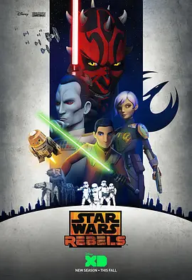

8.5
星球大战：义军崛起 第三季
Star Wars Rebels Season 3
2016
美国
评分 8.5
导演:
Bosco Ng / Melchior Zwyer
演员:
泰勒·格雷 / 瓦内萨·马歇尔 / 小弗雷迪·普林兹 / 蒂娅·希尔卡 / 史蒂夫·布卢姆
类型:
冒险,动作,科幻
剧情简介
义军小队在持续扩张的银河压迫下继续行动，他们在边缘地带穿梭，执行情报任务、营救同伴，也在暗处试探帝国的弱点。团队经过前两季的磨炼后更为成熟，但每个人都被迫面对新的内心疑问，以及更复杂的力量对抗。艾斯纳试图在更强的原力敏感者身份中找寻平衡，他必须直面与黑暗交汇的危险；凯南因经历重创而被迫重新定义自己在原力中的位置，他与“本杜”的相遇，让他在黑暗与光明之外看见另一种存在方式。萨宾则在曼达洛人的家族责任和义军使命之间挣扎，她的技艺、性格与血统让故事在星战世界中延伸出新的层次。泽布与赫拉继续在战术和团队协作中担任关键角色，他们在一次次险境里让义军得以继续坚持。团队在行动中发现更多散落在星系中的抵抗力量，彼此之间的信号让反抗的火种逐渐变得清晰而连贯。随着帝国的控制不断收紧，新敌人与旧宿敌相继登场，战斗不再只是枪火与星舰的对抗，更是信念、生存与身份认同的拉扯。第三季的故事节奏紧凑，既有隐秘行动的压迫感，也有角色成长带来的情感重量。整个团队在星海深处的奔走，构成了抵抗组织早期最重要的一段历程。